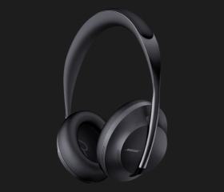

Наушники с шумоподавлением, которые способны на многое
До 20 часов воспроизведения
Наушники Bose NC 700
Премиальный дизайн и комфорт
-
11 уровней шумоподавленияС новыми наушниками Bose Noise Cancelling Headphone 700 можно плавно увеличить или уменьшить уровень шумоподавления. Вас слышно отлично и вы слышите собеседника четко, даже в шумной обстановке!
-
Комфорт на максимумСтильная, легкая дужка из нержавеющей стали с мягкими, расположенными под углом чашками наушников для комфортной посадки. Внутренняя сторона выполнена из мягкой гелевой подкладки, которая хорошо прилегает к голове.

способны на многое
- Возможность принимать звонкизвонкизвонкизвонки
- Насыщенное и мощное звучание
- Опция активного шумоподавления
- Непревзойденная система микрофонов
- Поддержка голосовых помощников
- Аудиоплатформа дополненной реальности Bose AR
Роскошь тишины
-
Максимальное наслаждение
Для того чтобы создать комфортную атмосферу — поднимайте уровень за уровнем от "прозрачного" режима до максимального блокирования звуков. Режим разговора можно активировать в один клик с помощью специальной кнопки.
-
Хрустальный звук
Система динамиков и фирменный активный эквалайзер способны обеспечить качественный и мощный звук на любом уровне громкости. Вы можете быть уверены в отсутствии искажений и кристальной чистоте высоких и низких частот.
Bose AR

Гарантии
-
Гарантия возврата денег в течение 90 дней
Если вы не удовлетворены продуктом на 100% вы можете вернуть его обратно и получить полный возврат денег
-
1 год гарантии
Вне зависимости от страны вашего проживания, если ваши наушники сломались, мы вышлем вам новые

история создания бренда
-
История Bose Corporation началась с разочарования. В 1956 году аспирант Массачусетского технологического института Амар Боуз (Amar Bose) приобрёл одну из лучших по тем временам стереосистем для своего дома. После нескольких минут прослушивания аудиозаписи его недоумение сменилось разочарованием.

-
С точки зрения Амара звук был настолько плоским и неестественным, что лучше не слушать музыку вовсе, чем слушать её в столь искажённом виде.
Разочарование Боуза переросло в твёрдую решимость – создавать аудиотехнику, которая будет передавать звук безупречно точно и естественно.
Никогда не переставайте мечтать. Всегда мечтайте о лучшем, и думайте о том, как этого достичь.
Основатель компании Амар Боуз
обзоры
- 1
- 2
- 3
- 4